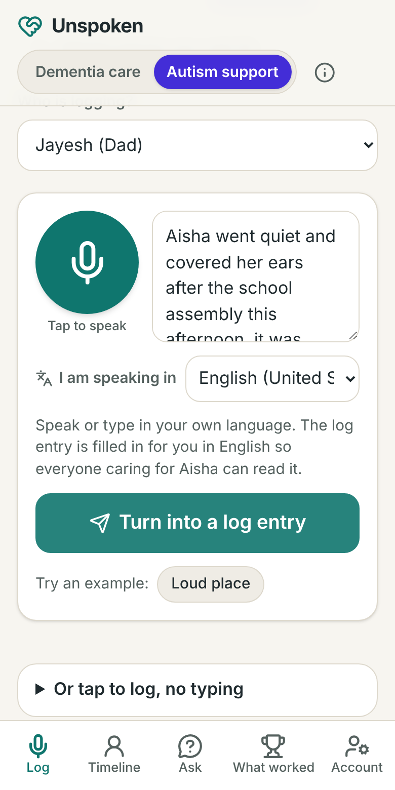
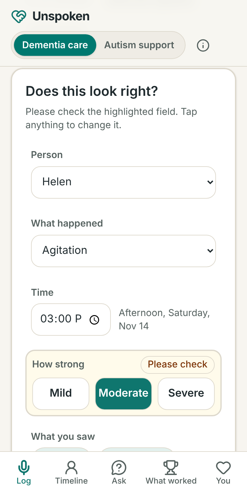
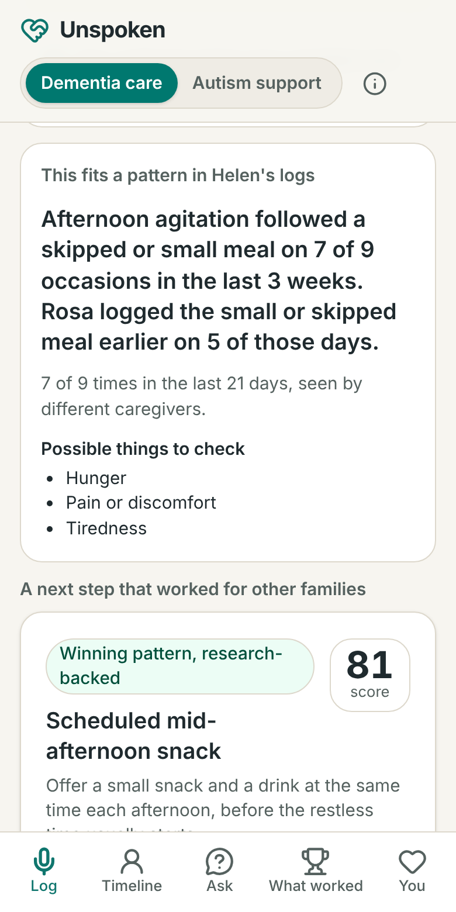

Team 4 · Unspoken · Jayesh, Prisha, Aadi, Vinod · GTransformer AI for Global Good
Distress is communication. People who can't always say what they need. Families who each see one piece.
"I asked her what is happening… she's pointing to the head and she's not liking it, and she was crying."
A parent on our team, father of an autistic daughter, in a note he spoke into the app
"She has never done something like this ever before."
The same parent, about the same night
Who we built for: a parent who shares the care of an autistic child with the other parent and the school. Each of them sees one piece of the day.
How it works and why it is safe
Supports caregivers. Does not diagnose.
Possible things to check, never causes. No medication or restraint is ever suggested.
Where the model helps
Note to fields, in any language. A visit summary from counted facts, checked in code. One follow-up question. Reading an Ask question.
Data handling
Synthetic data only. Audio is never stored. Community numbers need 5 or more families, count shown.
Demo

1. A parent says or types what happened
2. Check it. Change any field, then save
3. The pattern across both parents' entriesDemo video (85 seconds)
Unspoken_demo_Aisha.mp4, in the team folder and in the repo under submission/
Anyone who cares for the person says what happened, in their own words and language. One record: what led up to it, what was tried step by step, and what helped.
Proof
| Step | Benchmark | Red team |
|---|---|---|
| Keyword rules, no model | 50.0% (15 of 30) | 59.3% (35 of 59) |
| Safety screen and fallback | 70.0% (21 of 30) | 84.7% (50 of 59) |
| First real-model run | 83.3% (25 of 30) | 94.9% (56 of 59) |
| After the bias fix | 83.3% (25 of 30) | 100% (59 of 59) |
| After real-length notes | 88.6% (39 of 44) | 100% (59 of 59) |
| With four AI features on | 95.4% (103 of 108) | 100% (90 of 90) |
198 examples, one command, every run kept. All checks are deterministic. The last step added 64 new-feature cases, all passing; the original 44 still pass 39. 89 examples are hand-reviewed; 109 are drafted and pending review. Cost per note: $0.005 (measured tokens, public list prices, Nov 15).
Still failing: 4 of 108. Two notes name nobody while two children are on the roster, so the app asks. One summary line has a second count. One follow-up note has no earlier context. One case cannot be graded as written.
Found, fixed, and now regression tests
Who we reach first and what is next
First users
Families who share the care of one person: a parent living with dementia, or an autistic child.
Plan, not a partnership
Parent-run support groups we plan to approach, starting with FIRST CHANNEL. Group leaders hand out invite codes, which is also how we keep spam out.
The pattern speaks for the person who couldn't.
Next
Roadmap
What is honest today: no accounts yet, so testers use nicknames; community numbers are synthetic; the model turns notes into fields, nothing else.